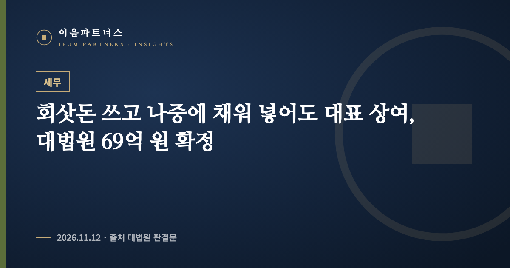

회삿돈 쓰고 나중에 채워 넣어도 대표 상여, 대법원 69억 원 확정

충남의 한 자동차 소음기 제조업체 대표는 지인 회사에 빌려준 것처럼 꾸며 회삿돈 83억 5,000만 원을 빼낸 뒤 개인 빚 변제 등에 썼고, 세무서는 회사 밖으로 나간 돈을 대표 상여(회사 돈이 대표 개인 소득으로 나갔다고 보는 처분)로 처리했습니다. 대법원은 2026년 11월 12일 이 가운데 69억 원은 나중에 돌려줬어도 회수로 볼 수 없다는 원심을 확정했습니다(대법원 판결문). 대표님 회사에도 대표님이 먼저 쓰고 나중에 채워 넣은 돈이 있지 않으신가요? 이 글에서는 판결문에 나온 판단 기준과 미리 확인할 것을 정리합니다.
이 판결은 확정된 부분과 다시 심리할 부분이 나뉩니다. 69억 원 부분은 회사의 상고가 기각돼 확정됐고, 해마다 연말에 채워 넣은 돈 부분은 대법원이 원심을 깨고 대전고등법원으로 돌려보내 아직 최종 결론이 나지 않았습니다. 대표님과 회사 사이 돈 흐름이 섞여 있다면 지금 정리 방향을 잡아 두시길 권하며, 궁금한 점은 카카오톡 채널 이음파트너스로 편하게 물어 주세요.
무슨 일이 있었나
판결문에 따르면 지방국세청은 이 회사의 2015~2019년 사업연도를 조사해, 대표가 회사 계좌에서 현금을 빼 현금시재(회사가 가진 현금 잔액)로 처리하거나 허위 대출을 일으키는 방식으로 회사 자금을 사적으로 썼다고 봤습니다. 세무서는 2021년 6월 17일 회사에 대표 상여로 소득금액변동통지(회사 돈이 대표 소득으로 처리됐다고 회사에 알리는 통지)를 했고, 회사가 이를 취소해 달라며 소송을 냈습니다.
| 구분 | 내용 |
|---|---|
| 허위 대여로 빼낸 돈 | 83억 5,000만 원(2017년 77억 원, 2018년 6억 5,000만 원), 형사판결 유죄 확정 |
| 대표 상여 처분 | 2016년 귀속 약 14억 6,058만 원, 2017년 귀속 약 71억 72만 원 |
| 확정된 부분 | 2017년 횡령액 중 69억 원은 사외유출이 맞음(회사 상고 기각) |
| 다시 심리할 부분 | 연말에 채워 넣은 2016년 약 4억 7,211만 원, 2017년 4,550만 원(대전고등법원 환송) |
기소 며칠 전 돌려준 69억 원, 왜 회수로 안 봤나
회사는 대표가 2018년 9월 17일 무렵 빼 간 돈을 모두 돌려놨으니 69억 원은 회사 밖으로 나간 돈이 아니라고 주장했습니다. 원심은 이 반환이 대표가 형사사건으로 기소되기 며칠 전에 이뤄졌을 뿐, 회사의 자발적인 노력으로 회수된 것으로 볼 수 없다며 받아들이지 않았고, 대법원도 이 판단에 잘못이 없다고 봤습니다.
대법원은 대표처럼 실질적으로 회사를 운영하는 사람이 회사 자금을 쓰면, 특별한 사정이 없는 한 처음부터 돌려줄 것을 전제로 한 것이 아니어서 쓰는 순간 이미 사외유출(회사 돈이 회사 밖으로 나간 것)이라는 기존 법리도 다시 확인했습니다. 그 특별한 사정은 회사가 증명해야 합니다.
연말에 채워 넣은 돈은 어떻게 봤나
원심은 대표가 2016년 약 4억 7,211만 원, 2017년 4,550만 원을 현금으로 쓴 뒤 그해 연말에 채워 넣었고, 외부감사인도 연말 현금 실사에서 적정의견을 냈다는 점 등을 들어 이 돈은 사외유출이 아니라고 봤습니다. 대법원은 연말에 돌려놓았더라도 다음 해에 다시 현금을 빼 쓰는 일이 되풀이됐다면 “위 각 연말에 이루어진 현금반환은 명목상의 것에 불과할 뿐”이라며 회수로 보기 어렵다고 판단했습니다(대법원 판결문).
대법원은 대표가 대주주이자 실질적 운영자로 자금 집행을 총괄했고, 회계 직원들이 대표의 지시에 따라 외부감사 전에 부족분을 채워 넣었으며, 회사 안에 이를 통제할 사람이 없었던 점도 함께 짚었습니다. 이 부분은 대전고등법원이 다시 심리해 결론을 내게 됩니다.
대표님이 지금 확인할 것
- 대표님이 회사 현금을 먼저 쓰고 나중에 채워 넣는 일이 해마다 되풀이되고 있지 않은지
- 장부상 현금 잔액과 실제 현금이 맞는지, 차이가 있다면 어떤 기록으로 남아 있는지
- 거래처나 지인 회사에 빌려준 것으로 처리된 돈이 실제 대여 거래인지
- 이미 쓴 돈이 있다면 정리 방법을 세무사·변호사와 미리 확인했는지
참고한 자료
- 대법원 2026. 11. 12. 선고 2026두31034 판결(소득금액변동통지처분취소) — 대법원 판결문 (2026.11.12)
대표님과 회사 사이 자금 흐름을 함께 점검해 보고 싶으시다면 카카오톡 채널 이음파트너스로 편하게 물어 주세요.
※ 이 글은 일반적인 정보 제공을 위한 것으로, 개별 사안은 세무사·노무사 등 전문가와 함께 확인하시기 바랍니다.